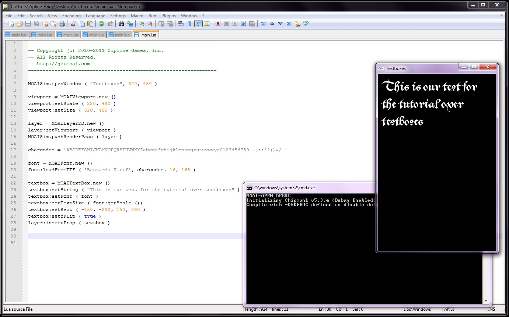
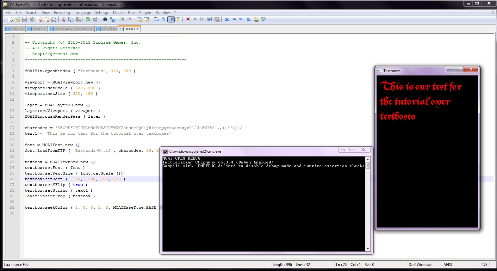
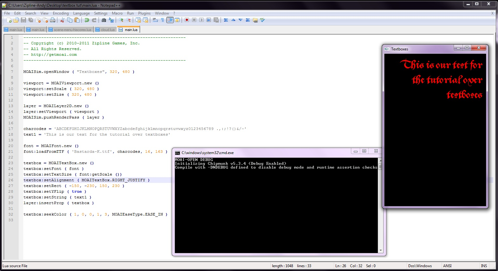
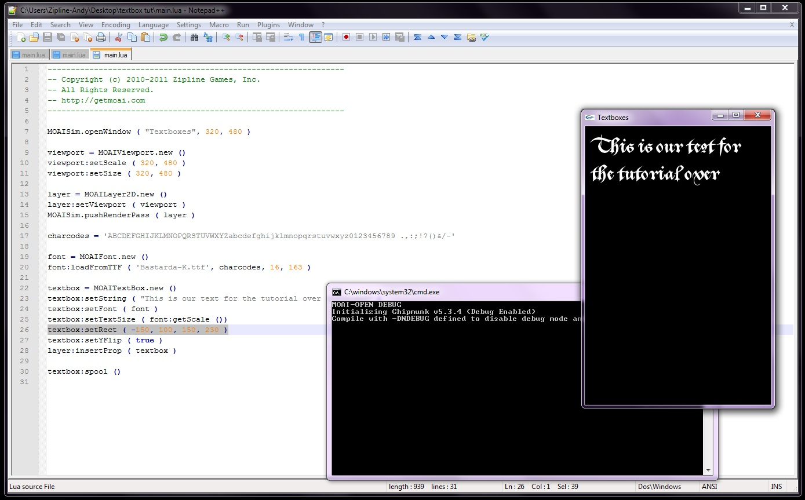
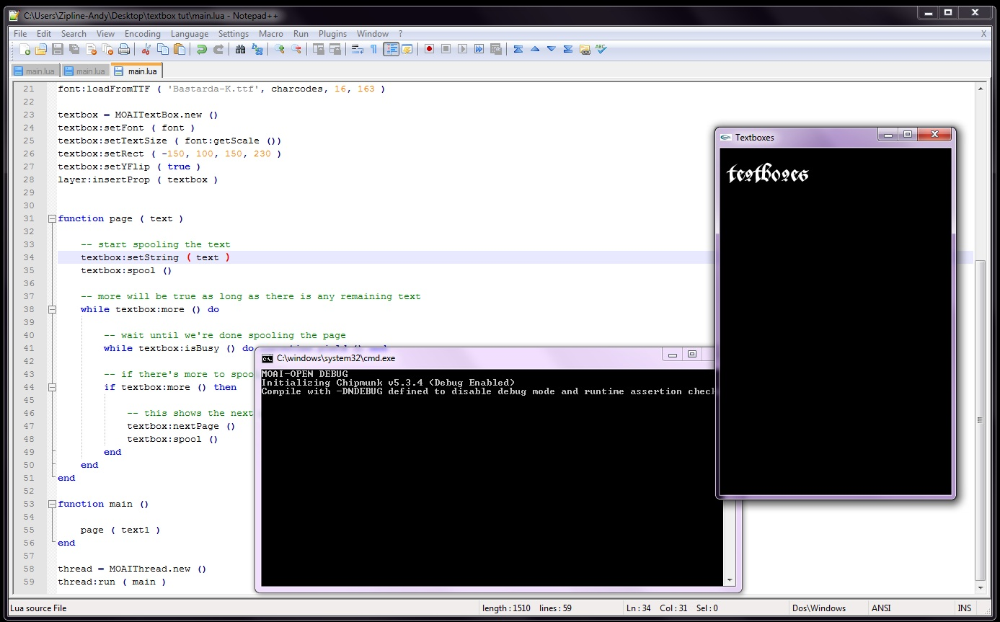

Textboxes
This tutorial will focus on text boxes and the things you can do with them. But first, a bit of information on how Moai handles fonts. When a font is loaded in, Moai creates a new texture so that it can draw the glyphs quickly. The downside to this is that once the font is called with a certain point size, scaling up or down from there will make the fonts look less smooth, so if you want nice looking fonts in different sizes, it is suggested to create a separate font for each point size.
To get started, like always, you’ll need to set up a MOAISim window.
MOAISim.openWindow ( "Textboxes", 320, 480 )
viewport = MOAIViewport.new ()
viewport:setScale ( 320, 480 )
viewport:setSize ( 320, 480 )
layer = MOAILayer2D.new ()
layer:setViewport ( viewport )
MOAISim.pushRenderPass ( layer )
Now that the window is ready, it's time to set up your charCodes. This will tell Moai which of the glyphs to use from the ttf, instead of just loading the entire file (which can take up a lot of unnecessary space.) The order doesn’t matter, just as long as every symbol you will use is included. Also, be sure to include a space! For the entirety of this tutorial, the following line of code will suffice.
charcodes = 'ABCDEFGHIJKLMNOPQRSTUVWXYZabcdefghijklmnopqrstuvwxyz0123456789 .,:;!?()&/-'
Your next step is to load in the font that you want to use. Moai allows users to load a font directly from a true type font file and use that. Feel free to use any TTF file that you would like.
font = MOAIFont.new ()
font:loadFromTTF ( 'Bastarda-K.ttf', charcodes, 16, 163 )
The loadFromTTF function takes in the following parameters:
loadFromTTF ( file name, char codes, point size for the font to render, device dpi )
Now that font setup is complete, it is time to create a text box.
textbox = MOAITextBox.new ()
textbox:setString ( "This is our text for the tutorial over textboxes" )
textbox:setFont ( font )
textbox:setTextSize ( font:getScale ())
textbox:setRect ( -150, -230, 150, 230 )
textbox:setYFlip ( true )
layer:insertProp ( textbox )
One thing to note about “setYFlip.” While all other props in Moai will automatically assume a world style coordinate, a textbox will assume a window style. To get the textbox to render with world style, you set YFlip to true. And running that, you should see the following:

Now that you've created a text box, you can start changing it a bit. You may have noticed that the text appeared instantly. You can change that behavior to spool in with
textbox:spool ()
This will slowly scroll the text through one space at a time. Perhaps you aren’t too fond of the color white for your text. That is simply changed by using seekColor.
textbox:seekColor ( 1, 0, 0, 1, 3, MOAIEaseType.EASE_IN )

If you've read the tutorial on prop animations, this should look familiar to you. Textboxes in Moai are actually considered props, so any of the animations talked about in that tutorial will also apply here. Moves, rotates, scale; all of them apply to textboxes. Now suppose that you want to change the alignment of the textbox, it’s as easy as inserting another line. This can just be added in the main textbox chunk.
textbox:setAlignment ( MOAITextBox.RIGHT_JUSTIFY )
And now the text will be justified to the right side of the screen. You could also do MOAITextBox.LEFT_JUSTIFY or MOAITextBox.CENTER_JUSTIFY if that was what you wanted.

Time to get a bit more complicated. The textbox is currently the size of the screen, but what if it was smaller? And what if there was too much text for it? Go ahead and delete the shading and the alignment, you don’t need them for what you’re doing. Now edit the size of the textbox rect, replacing your code with this:
textbox:setRect ( -150, 100, 150, 230 )
and run the file. You should get:

As you can see, the text didn’t finish displaying. One method thatyou can use in order to scroll through the rest of the text is to create a function that will check, once the text can spool no more, if there is any more text in the string; if there is, it will then start spooling the rest of the text. This sample will just quickly run through the text; for games, you might want to wait for user input before moving onto a the next textbox. This is what the completed file will look like:
MOAISim.openWindow ( "Textboxes", 320, 480 )
viewport = MOAIViewport.new ()
viewport:setScale ( 320, 480 )
viewport:setSize ( 320, 480 )
layer = MOAILayer2D.new ()
layer:setViewport ( viewport )
MOAISim.pushRenderPass ( layer )
charcodes = 'ABCDEFGHIJKLMNOPQRSTUVWXYZabcdefghijklmnopqrstuvwxyz0123456789 .,:;!?()&/-'
text1 = 'This is our text for the tutorial over textboxes'
font = MOAIFont.new ()
font:loadFromTTF ( 'Bastarda-K.ttf', charcodes, 16, 163 )
textbox = MOAITextBox.new ()
textbox:setFont ( font )
textbox:setTextSize ( font:getScale ())
textbox:setRect ( -150, 100, 150, 230 )
textbox:setYFlip ( true )
layer:insertProp ( textbox )
function page ( text )
textbox:setString ( text )
textbox:spool ()
while textbox:more () do
while textbox:isBusy () do coroutine.yield () end
if textbox:more () then
textbox:nextPage ()
textbox:spool ()
end
end
end
function main ()
page ( text1 )
end
thread = MOAIThread.new ()
thread:run ( main )
Now to break this down piece by piece. From the top, the first change is that the string has been moved to a variable called “text1”. This is so you can just call “text1” inside the function instead of having to call the entirety of the textbox. After that, you create the page scrolling function.
function page ( text )
-- start spooling the text
textbox:setString ( text )
textbox:spool ()
-- more will be true as long as there is any remaining text
while textbox:more () do
-- wait until we're done spooling the page
while textbox:isBusy () do coroutine.yield () end
-- if there's more to spool, show the next page
if textbox:more () then
-- this shows the next page and restarts the spool action
textbox:nextPage ()
textbox:spool ()
end
end
end
Now that you've created the page scrolling function, create your main game loop and the thread to run it.
function main ()
page ( text1 )
end
thread = MOAIThread.new ()
thread:run ( main )
And with that, thread running is complete. When it’s all finished, you should see the following:

There you have the basics of textboxes!